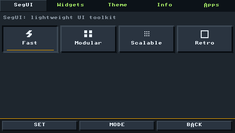
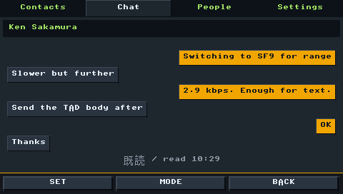
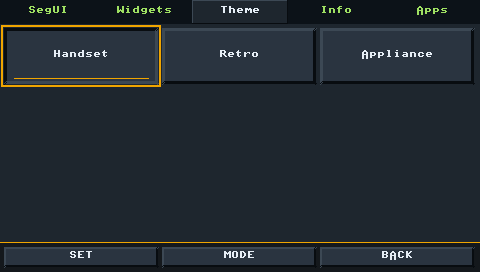
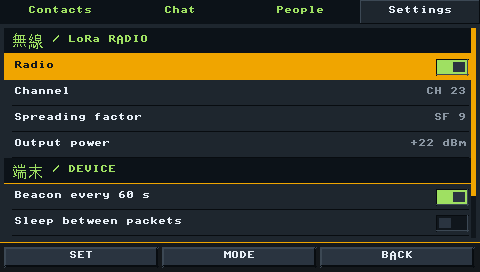

戦術通信・産業エッジにおける位置づけ (Tactical & Industrial Edge Positioning)
手首装着戦術ストラップ・衛生/EOD 計器 (Tactical Wrist Strap)
両手が塞がる爆発物処理（EOD）、前線衛生トリアージ、航空乗員、および夜間潜入任務では、0.5 秒以内に方位・暗号警報・生体テレメトリを判読できる手首表示器が求められる。BAND シェルは 128×160 以下の低輝度 OLED / 反射型 LCD 向けに暗視ゴーグル適合パレットと単一 BODY 帯構成を提供し、不要な無線発信やバックグラウンド処理を完全に遮断した超低消費電力稼働を実現する。
Designed for hands-busy EOD, combat medics, flight crews, and night operations, BAND delivers sub-second glanceable waypoint, alert, and biometric telemetry on ≤128×160 NVG-compatible OLED/transflective panels with zero background telemetry leakage and milliwatt power envelopes.
工場安全監視バンド・クリーンルーム警報器 (Wearable Edge Annunciator)
化学プラントの単独作業者安全監視（マンダウン警報・ガス濃度閾値通知）、半導体クリーンルーム内のハンズフリー工程指示、および変電設備の高圧近接警告において、BAND は POCKET と共通の SegUI 宣言的フォーム定義（include/btron/segui.h）をそのまま縮小展開する。これにより企業は 1 つの C99 UI 仕様でポケット端末とウェアラブル警報器を同時保守できる。
For lone-worker safety monitors, gas/high-voltage proximity alerts, and cleanroom operator straps, BAND compiles the exact same declarative SegUI layout primitives as POCKET—enabling edge enterprises to certify and maintain wearable annunciators alongside handheld terminals from one codebase.
対象解像度 (Requested Resolutions)
320×320 未満のうち 128×160 枠内に収まる全 5 モードが BAND を選択する。実装ソース：src/desktop/ui/band/、include/btron/segui.h。
| BTRON_RES | 解像度 (Pixels) | パネル規格・実機系譜 | 主用途 |
|---|---|---|---|
| BTRON_RES_S30_128X160 | 128×160 | Series 30 (Nokia 2630, 3500, 6650) | 縦型リスト装着ストラップ・工程通知器 |
| BTRON_RES_QQVGA_160X120 | 160×120 | QQVGA | 横型リストバンド・計器バー表示 |
| BTRON_RES_SQVGA_128X128 | 128×128 | SQVGA | 正方形スマート戦術ウォッチ・警報盤 |
| BTRON_RES_SQCIF_128X96 | 128×96 | SQCIF | 超小型ウェアラブル OLED テレメトリ |
| BTRON_RES_ARDUBOY_128X64 | 128×64 | Arduboy / 1-bit OLED | 極限省電力モノクロ帯状ステータス表示 |
SegUI 帯レイアウト参照画面 (Shared SegUI Band Primitives)
BAND は POCKET と共通の SegUI 帯エンジンで描画される。以下はヘッドレス C99 レンダラが生成した SegUI 基本プリミティブ（ホーム帯、連絡先・チャット通知、高コントラスト配色切替、システム状態表示）の実機キャプチャであり、128×160 以下の BAND パネルへ同一のウィジェット木構造のまま適用される。
Native C99 SegUI reference captures illustrating the shared band primitives—alert streams, directory status, contrast themes, and system telemetry—that scale directly into ≤128×160 BAND viewports.



